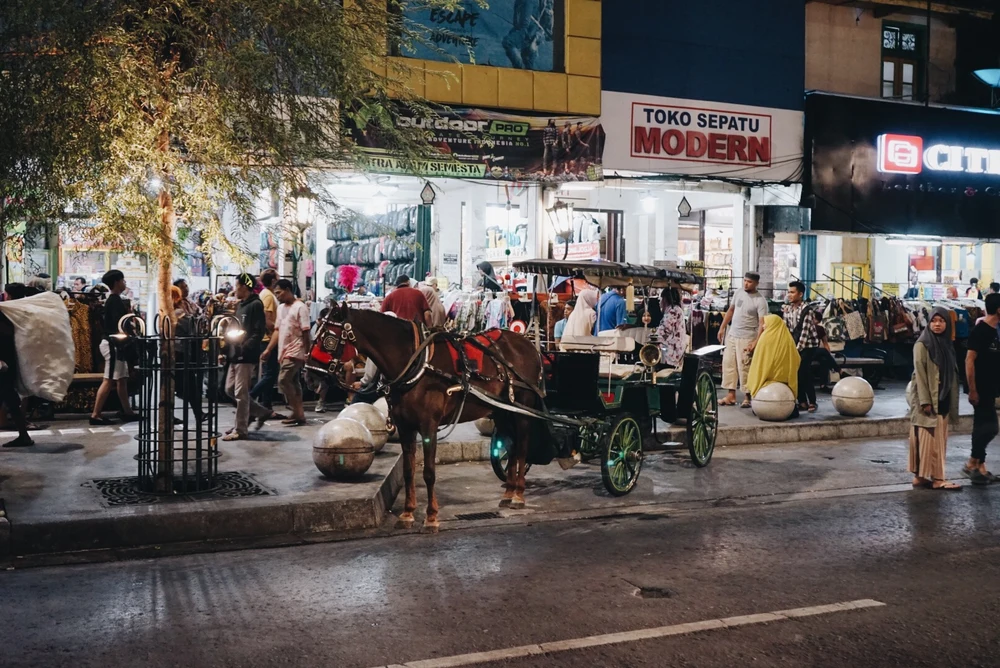
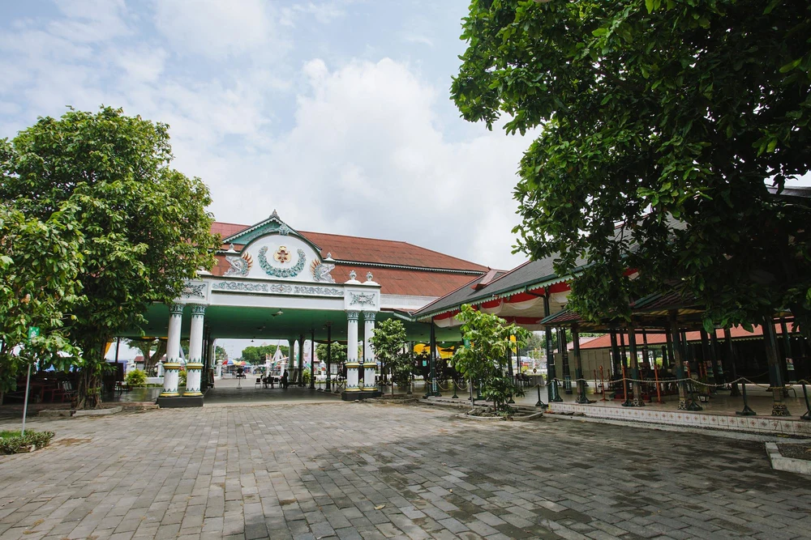

Jalan Malioboro

Jelas saja tempat wisata di Jogja yang satu ini wajib ada di nomor 1. Kamu betul-betul belum ke Jogja namanya kalau enggak mampir atau paling enggak lewat Jalan Malioboro!
Selain untuk beli oleh-oleh, kamu juga bisa makan-makan di area Malioboro. Apalagi kalau malam, banyak banget warung tenda berdiri di sini.
Kalau kamu liburan ke Jogja dengan kereta, kamu bisa langsung berjalan kaki dari Stasiun Tugu Yogyakarta ke Jalan Malioboro karena lokasinya berseberangan. Apalagi kalau kamu tiba di sore hari. Duh, cocok banget untuk langsung isi perut di area Malioboro!
Kraton Yogyakarta

Jogja adalah sebuah Daerah Istimewa, yang dipimpin oleh seorang raja yaitu Sultan Hamengkubuwono X. Seorang raja tentu saja butuh istana, dan Kraton Yogyakarta adalah istananya. Sejarah panjang Kesultanan Yogyakarta pun bisa kamu lihat langsung di sini.
Kamu bisa mengunjungi Kompleks Utama Kraton Yogyakarta yang dibuka untuk umum pada pukul 08.30 - 13.00 WIB, kecuali Jumat hanya sampai 11.00 WIB. Ada pemandu yang bisa menemanimu menjelajahi area Kraton. Tetapi kalau kamu ingin berjalan-jalan sendiri pun tak masalah.
Harga tiket masuk Kraton Yogyakarta sangat murah, hanya Rp 5.000 untuk wisatawan domestik dan tambahan Rp 1.000 untuk izin berfoto.
Tugu Yogyakarta
Tugu Yogyakarta adalah salah satu area ikonik lainnya di Jogja yang enggak boleh dilewatkan wisatawan, apalagi kalau baru pertama kali liburan ke Jogja. Umumnya, Tugu Yogyakarta adalah tempat berfoto yang wajib dikunjungi untuk membuktikan kalau kamu beneran udah ke Jogja!
Berfoto dengan latar belakang Tugu memang agak tricky, tapi Klook bisa kasih tipsnya ke kamu: kamu bisa berfoto dari pinggir jalan seberangnya - dengan timing yang bagus, kamu akan bisa mendapatkan foto yang ciamik!
Cara lainnya adalah dengan mampir ke restoran dan kafe yang terletak tepat di seberang Tugu. Biasanya restoran ini punya teras lantai 2, dan kamu bisa berfoto dari atas sana! Tentu aja kamu harus beli makanan dan minuman dulu ya di sini, jangan langsung masuk dan berfoto gitu aja.